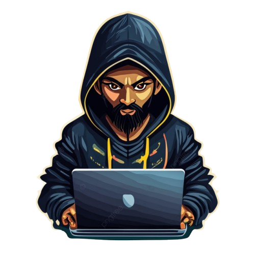

R.RAFI FAUZI

Services
Pembuatan website dengan HTML,CSS,JS dan PHP

Web developer
Saya berpengalaman membuat beberapa website sederhana termasuk website top-up games,portfolio,website sekolah dan sebagainya.
Database
Pembuatan database dengan MYSql dan SQLYog.
Front End developer
Telah sedikit berpengalaman di bidang Front End dalam pembuatan website sekolah dan perubahan desain website.
Developer games with unity
Membuat game sederhana dengan engine unity.